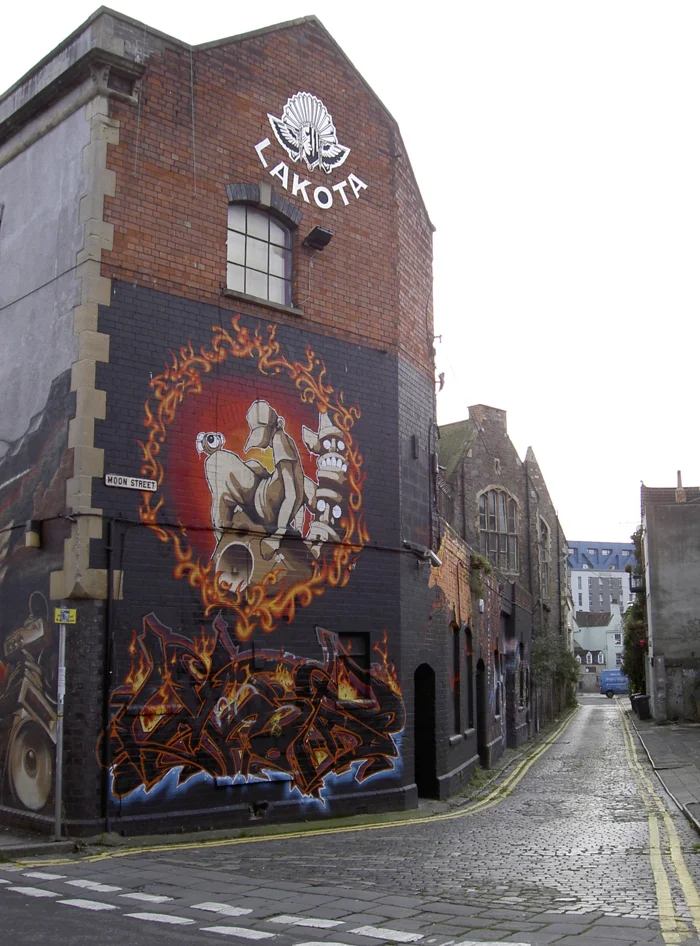

Bristol clubs
The best clubs in Bristol, from Motion to Lakota
A five-room warehouse club that lost its building in 2025 and moved rather than closed, a four-floor room on Upper York Street that never stopped booking drum and bass, and a 1959 cargo ship still running club nights from the same mooring.
A different kind of clubbing city.
Bristol's club scene runs on a different reputation from most UK cities on a clubbing shortlist: it gave drum and bass some of its early rooms and never really stopped booking it. That heritage sits alongside a warehouse-scale club that spent two decades as one of the UK's biggest rooms before losing its building in 2025, and a converted cargo ship that has run gigs and club nights from the same mooring since the 1980s. This guide covers all three, plus where the rest of the city's clubbing sits around them.
Motion, in more depth.
Motion opened in 2006 in a former skatepark on Avon Street, and grew over the following years into a 4,000-capacity, five-room warehouse complex that DJ Mag ranked among the world's best clubs and named the UK's best large club. For most of its run it was the venue that Bristol's biggest touring DJs and its own drum and bass scene, including the long-running Hospitality Bristol nights, treated as home ground.
In November 2024, Motion's team announced that the owners of its Grade II-listed Avon Street building had declined to renew the lease, due to expire the following July. Rather than close outright, the venue launched a crowdfunding campaign, #KEEPMOTIONMOVING, aiming to raise the money to find and fit out a new site. Motion played its final nights on Avon Street in July 2025, after nineteen years, and reopened later that year at a new address, Unit 2 on Victoria Terrace, under the same name and team.
The best clubs in Bristol now.
| Club | Area | Music and character | Best for |
|---|---|---|---|
| Motion | Victoria Terrace, since 2025 (previously Avon Street, 2006-2025) | A five-room warehouse complex, DJ Mag-ranked among the world’s best large clubs at its original site | Big touring bookings and Bristol’s own drum and bass nights |
| Lakota | Upper York Street | Four floors running drum and bass, jungle, hardcore, dubstep, psytrance and techno since the early 1990s | A genuine link to Bristol’s bass-music history, not a revival of it |
| Thekla | Floating Harbour | A converted 1959 cargo ship, gigs first and club nights second, run by DHP Family since the venue opened in 1984 | A night out built around a room nobody else has |
Lakota and Bristol's bass-music line.
Lakota, a warehouse-style club on Upper York Street with four dance floors, has been running club nights since the early 1990s, and Resident Advisor's own listing calls it Bristol's "home of the underground." Its bookings back that up on the page rather than just the slogan: Metalheadz has held Blue Note Sessions there, the jungle night Jungle Cakes is a recurring booking, and drum and bass labels including Eatbrain and Neuroheadz have run nights on its bill. Andy C and Tonn Piper headlined its New Year's Eve line-up in 2021.

None of that makes Lakota a museum piece. Alongside the drum and bass and jungle nights, its four rooms run hardcore, dubstep, psytrance and techno through the week, closer to a working multi-genre club than a genre showcase.
Boiler Room's own visits to the city, in 2015, ran a short season of Bristol-only broadcasts rather than one-off bookings: Hodge, a producer working the dubstep and techno border, filmed a set in the city on 6 August, and Shanti Celeste, a house and disco DJ who had just signed to Julio Bashmore's Broadwalk label, filmed hers on 28 September.
Both sets are still credited on Boiler Room's own channel as filmed in Bristol rather than at a named club, so this guide embeds them as part of the city's Boiler Room history rather than attaching them to Lakota, Motion or any other single room.
Where to go out in Bristol.
Motion's new site on Victoria Terrace and Lakota's Upper York Street building both sit within the Old Market and St Philip's area east of the city centre, a short walk or cab ride from each other. Thekla is a different kind of night out entirely: a converted cargo ship, built in Germany in 1959, that arrived in Bristol in 1983 and opened the following year, on 1 May 1984, as The Old Profanity Showboat. It's moored in the Floating Harbour and run today by DHP Family, the promoter behind Nottingham's Rock City among other UK venues, mainly as a live-music room that also runs club nights on its lower deck.
Beyond these three, Bristol's own listings regularly point newcomers toward SWX, a live-music-and-club space in a former nightclub building; Marble Factory, Thekla's sister venue in the same harbourside complex; Basement 45; and The Fleece, better known as a gig venue. None of the four were researched to the same depth as Motion, Lakota and Thekla for this guide.
Bristol clubs FAQ.
Is Motion nightclub in Bristol still open?
Yes, but not at the address most of its history is attached to. The original Avon Street venue closed in July 2025 after its landlord declined to renew the lease on the Grade II-listed building. Motion's team crowdfunded a move and reopened later in 2025 at a new site, Unit 2 on Victoria Terrace, under the same name.
What is the biggest club in Bristol?
Motion, historically: at its original Avon Street site it held around 4,000 people across five rooms and was ranked by DJ Mag among the world's best large clubs. Press coverage of its 2025 move to Victoria Terrace has not yet confirmed a capacity for the new building.
Does Bristol have a real drum and bass scene?
Yes. Lakota alone has hosted Metalheadz's Blue Note Sessions, the jungle night Jungle Cakes, and label nights from Eatbrain and Neuroheadz, and Andy C headlined its New Year's Eve bill in 2021. That's on top of the city's wider production history, which runs through Roni Size and Reprazent's Bristol-based Mercury Prize win in the 1990s.
Is Thekla a nightclub or a live music venue?
Both, in practice, though it leans toward live music first. It's run by DHP Family, a promoter better known for gig venues, and most of its programme is touring bands. Its lower deck also runs regular club nights, which is why it turns up on both gig listings and club guides for Bristol.
Are there other clubs in Bristol worth knowing about?
Yes, though this guide only researched three in depth. SWX, a live-music-and-club space in a former nightclub building; Marble Factory, Thekla's sister venue in the same harbourside complex; Basement 45; and The Fleece all turn up regularly in Bristol's own club and gig listings.
Sources.
- Resident Advisor: Motion Bristol and Lakota, Bristol, venue pages
- Mixmag: Motion Bristol to shut down in July, announces plans for a new home (2025)
- BristolWorld: Motion Bristol to sadly close down after 20 years (2025)
- Bristol24/7: coverage of Motion, Lakota and Thekla club nights
- Daily Express: Huge UK music venue shutting doors in weeks (2025)
- Thekla's own history, and its 1 May 1984 opening date as The Old Profanity Showboat, per the venue's Instagram account and an AgilityPR/DHP Family press release.
- Hodge and Shanti Celeste's 2015 Boiler Room Bristol sets: dated via Apple Music's DJ-mix listings, confirmed via each video's own YouTube oEmbed title.
- Lakota's opening period is given as "the early 1990s" because two independent sources disagree on the exact year (one says 1990, another 1992); both are recorded in the editorial review's fact-check ledger rather than one being picked without a stronger source.
Continue reading
Read next.
 Rave spots~12 min read
Rave spots~12 min readBest Electronic Music Clubs in London: History and Where to Go
The best electronic music clubs in London now, plus the rooms that shaped acid house, jungle, garage and dubstep.
Read article → Digging~12 min read
Digging~12 min readWhere to Watch Live DJ Sets: Boiler Room, HÖR, NTS and More
Where to watch DJ sets online, how the main platforms differ, and a route through 62,824 archived recordings.
Read article → Festivals~9 min read
Festivals~9 min readTomorrowland Festival: Where It Is, How Big, and the Music
A park in Boom, Belgium, that most of the world knows through a livestream: where Tomorrowland happens, how big it is, who owns it, and what plays off the Mainstage.
Read article → Festivals~11 min read
Festivals~11 min readEDC Las Vegas: What It Is, How Big, and the Music
Electric Daisy Carnival at the Las Vegas Motor Speedway: where EDC happens, how half a million people a year grew out of a field in Chino, and what plays past kineticFIELD.
Read article →